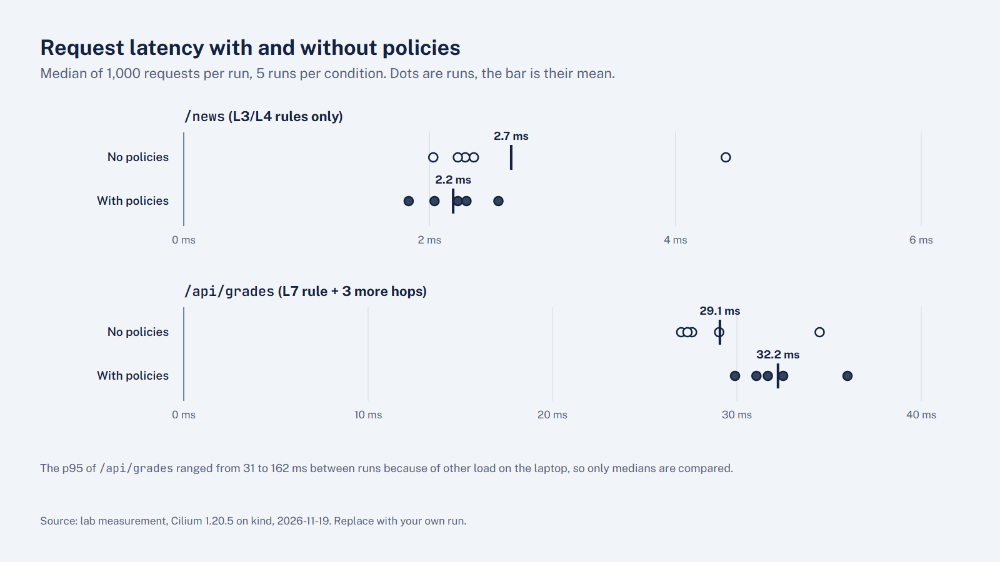
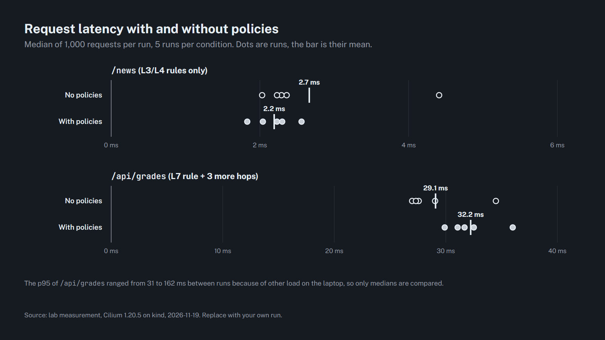
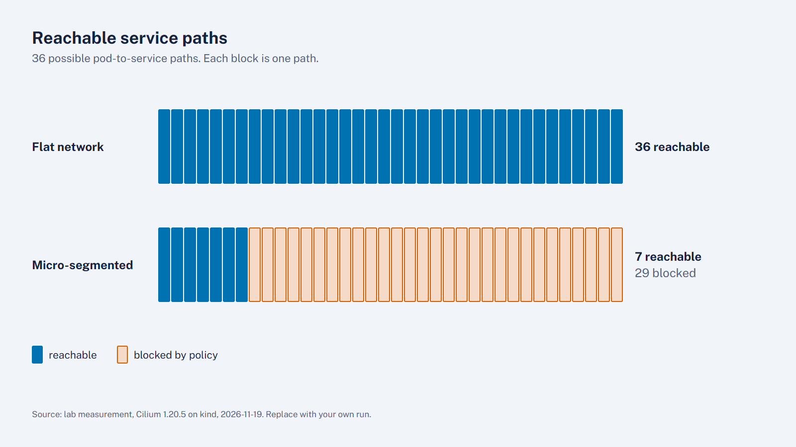
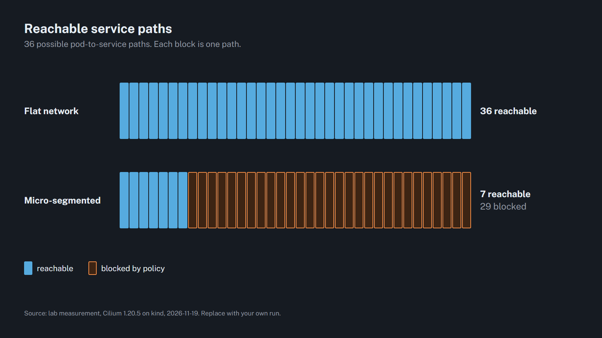
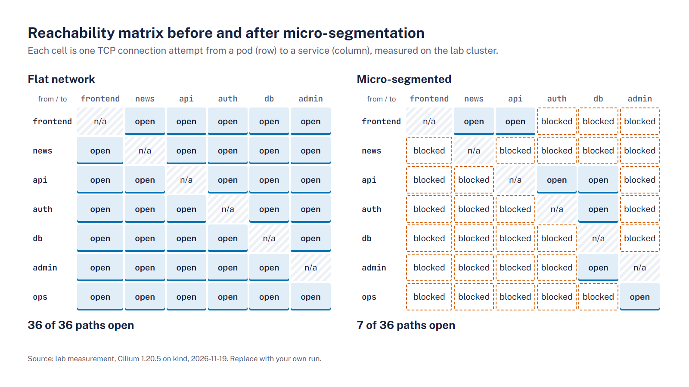

Chapter 12. Measure
This chapter measures what segmentation costs. The numbers all come from your own laptop. You'll write measure.py, a script that times 21,000 requests to the portal with and without your policies, and you'll learn which differences you may report as real and which are noise. At the end you'll have a 21-line results file and the charts for your results chapter. Plan about 2 hours, and the script itself runs for about 10 minutes.
What median, p95 and stdev mean
Latency is the time from sending a request until the whole answer has arrived. The script prints four numbers for each batch. The median is the middle time after sorting. It's the number for a normal request. The mean is the ordinary average. A few slow requests pull it up. The p95 and p99 are the times that 95 and 99 percent of the requests beat, so they describe the slow end, the few requests that ran into a moment when the laptop was busy with something else. The script repeats the whole test five times. The stdev says how far one run's median typically lands from the others. That spread is the noise. The overhead is the difference between the mean of the run medians with policies and without them.
Write measure.py
measure.py sets the network to one condition, logs in as sara, sends a burst of requests to two pages of the portal and times each one. Then it switches to the other condition and does the same, five times over, and writes everything into a file.
Create ~/microseg/measure.py in VS Code the same way as in chapter 5, paste this file into it and press Ctrl+S until the tab shows no round dot.
# Latency with vs. without policies. Run from ~/microseg with: .venv/bin/python measure.py
import csv
import os
import statistics
import subprocess
import time
import requests
PORTAL = "http://127.0.0.1:30080"
RUNS = 5
REQUESTS = 1000 # timed requests per endpoint per run
WARMUP = 50 # requests sent first and thrown away
ENDPOINTS = ["/news", "/api/grades"]
CONDITIONS = ["no-policies", "policies"]
def set_policies(condition):
if condition == "policies":
subprocess.run(["kubectl", "apply", "-f", "k8s/policies/"], check=True)
else:
subprocess.run(["kubectl", "delete", "-f", "k8s/policies/", "--ignore-not-found"], check=True)
time.sleep(15) # give Cilium time to update every pod
def login(session):
answer = session.post(PORTAL + "/api/login", json={"username": "sara", "password": "sara2026"}, timeout=10)
return answer.json()["token"]
def measure(session, path, token):
times = []
for i in range(WARMUP + REQUESTS):
start = time.perf_counter()
answer = session.get(PORTAL + path, headers={"Authorization": "Bearer " + token}, timeout=10)
elapsed_ms = (time.perf_counter() - start) * 1000
answer.raise_for_status() # stop on any error, never time a failed request
if i >= WARMUP:
times.append(elapsed_ms)
cuts = statistics.quantiles(times, n=100) # cuts[94] = p95, cuts[98] = p99
return [round(statistics.median(times), 2), round(cuts[94], 2), round(cuts[98], 2),
round(statistics.mean(times), 2)]
os.makedirs("results", exist_ok=True)
session = requests.Session()
rows = []
for run_number in range(1, RUNS + 1):
for condition in CONDITIONS:
set_policies(condition)
token = login(session)
for path in ENDPOINTS:
numbers = measure(session, path, token)
print(run_number, condition, path, "median/p95/p99/mean ms:", numbers)
rows.append([condition, path, run_number] + numbers)
with open("results/latency.csv", "w", newline="") as f:
writer = csv.writer(f)
writer.writerow(["condition", "endpoint", "run", "median_ms", "p95_ms", "p99_ms", "mean_ms"])
writer.writerows(rows)
print("\nMean of the run medians:")
for path in ENDPOINTS:
result = {}
for condition in CONDITIONS:
medians = [row[3] for row in rows if row[0] == condition and row[1] == path]
result[condition] = statistics.mean(medians)
print(f" {path:12} {condition:12} {result[condition]:7.2f} ms (stdev {statistics.stdev(medians):.2f})")
overhead = result["policies"] - result["no-policies"]
print(f" {path:12} overhead {overhead:7.2f} ms ({100 * overhead / result['no-policies']:.1f} %)")(1) PORTAL = "http://127.0.0.1:30080" sends every request through the NodePort, the same door real students and the attacker use.
(2) RUNS = 5, REQUESTS = 1000 and WARMUP = 50 set the size of the test. Each run sends 1,050 requests to each page in each condition and throws away the first 50 of each batch, 21,000 requests in all. Those first 50 are the warm-up. The first requests after a policy change are slower, because connections are being opened and caches filled, and they would make the policies look more expensive than they are.
(3) ENDPOINTS names the two pages. /news goes from frontend to news, a path covered only by address-and-port rules. /api/grades goes from frontend to api through the L7 rule and Envoy, then from api to auth to check the token and from api to db for the grades. So /news shows what the L3/L4 rules cost on their own, and /api/grades adds the L7 rule.
(4) set_policies runs kubectl apply or kubectl delete on the whole k8s/policies/ folder, then waits 15 seconds so Cilium can update every pod. check=True makes the script stop if kubectl reports an error.
(5) login signs in as sara and returns her token, the same way check-portal.sh does.
(6) measure does the timing. time.perf_counter() is Python's most precise clock. answer.raise_for_status() stops the script on any error status, so a failed request is never timed as if it were a fast one. if i >= WARMUP keeps a time only after the warm-up. statistics.quantiles(times, n=100) cuts the sorted times into 100 equal groups and returns the 99 cut points between them. Python counts list positions from 0, so cuts[94] is the 95th cut point, the p95, and cuts[98] is the p99.
(7) The main loop runs both conditions inside each run, one after the other. If the laptop has a slow minute, it lands on both conditions instead of hurting only one of them.
(8) The with open(...) block writes results/latency.csv, one row per run, condition and page. Five runs times two conditions times two pages gives 20 rows, and with the header the file has 21 lines. The file is written once, at the very end, so a run that stops halfway leaves no new file.
(9) The last part prints, for each page and condition, the mean of the five run medians with their stdev, then the overhead in milliseconds and in percent.
(10) CONDITIONS ends with "policies", so the script always finishes with your policies applied.
CSV, short for comma-separated values, is a plain text table where each line is one row and commas separate the columns. Excel opens it directly.
Check that the whole file landed on disk. VS Code can show text that isn't saved yet, while the commands below read only what's on disk.
cd ~/microseg
wc -l measure.pywc -l counts the lines in the file.
You should see one line.
It must read 71 measure.py. A smaller number means the paste was cut short or the file wasn't saved. Paste the whole file again, press Ctrl+S and run wc -l measure.py once more.
Then check that the file is valid Python.
cd ~/microseg
.venv/bin/python -m py_compile measure.py && echo "measure.py compiles"-m py_compile reads the file and reports any syntax error without running it. The && runs the echo only if that check passed.
You should see one line.
It must read measure.py compiles.
If you see this instead
IndentationError: unexpected indentSome lines lost or gained spaces during pasting. The message names the line. Open the file in VS Code, delete everything, paste the file again with Ctrl+V and save.
[Errno 2] No such file or directory: 'measure.py'The file isn't in ~/microseg, or it has a different name. Check the name in VS Code's file list, then run the command again from ~/microseg.
Run measure.py
The run takes about 10 minutes, 9 minutes 38 seconds on the test laptop. Every program that uses the processor during that time adds noise. Plug the laptop in. Close the Hubble UI tab, the dashboard tab and any other browser windows, and leave the laptop alone until the prompt comes back. The dashboard program itself can keep running in its terminal, because it does nothing unless a page asks it to.
cd ~/microseg
time .venv/bin/python -u measure.py | tee ~/microseg/evidence/ch14-measure.txttime runs the command after it and prints how long it took when it ends. .venv/bin/python is the Python inside your project's virtual environment, the one that has requests installed. -u makes Python print each line the moment it's ready. Without it, Python holds back its own lines whenever its output goes into a pipe, and you'd see only kubectl's lines until the very end. | tee ~/microseg/evidence/ch14-measure.txt shows the output and saves a copy for your report.
You should see kubectl lines saying the ten policies were deleted or created, and between them one line for each run, condition and page. At the end comes a short summary.
The output above keeps only the measurement lines and the summary, and on your screen they sit between the kubectl lines. Each measurement line starts with the run number, the condition and the page, followed by four numbers in milliseconds in the order median, p95, p99 and mean. The last six lines are the summary. For each page they give the mean of the five run medians without and with policies, each with its stdev, and then the overhead. On the test laptop, /news gave 2.66 ms without policies and 2.19 ms with them, and /api/grades gave 29.08 ms and 32.23 ms. Your numbers will be different, since they depend on your laptop and on what else it was doing. The last thing printed is the time result, where real is the time that passed on the clock.
If you see this instead
The run ends after a second with no output. The file on disk is empty or incomplete. Save it in VS Code and check wc -l measure.py again.
error: the path "k8s/policies/" does not existYou started the script from another folder, so the relative path k8s/policies/ points nowhere. Python then stops with a CalledProcessError. Run cd ~/microseg and start the measurement again.
ModuleNotFoundError: No module named 'requests'You ran the script with python3 instead of .venv/bin/python. The system Python doesn't have requests. Use the command exactly as shown.
requests.exceptions.HTTPError: 403 Client Error: Forbidden for url: http://127.0.0.1:30080/api/gradesA request failed and the script stopped on purpose. First run kubectl apply -f k8s/policies/, because the script may have stopped with the policies removed. A 403 on /api/grades means the L7 rule in your api policy doesn't list GET /api/grades exactly. A 500 Server Error or a KeyError: 'token' points at a portal that isn't healthy. Run bash check-portal.sh, fix whatever it reports with the help of chapter 13, and run the measurement again.
The results file, row by row
The summary gives you the headline numbers. The CSV holds every run, and it shows you how much the numbers wander from one run to the next.
cat results/latency.csvcat prints a file's contents to the screen.
You should see a header line and then 20 rows, four for each run.
condition,endpoint,run,median_ms,p95_ms,p99_ms,mean_ms
no-policies,/news,1,2.03,3.07,4.69,2.19
no-policies,/api/grades,1,34.49,161.73,330.42,55.05
policies,/news,1,2.04,2.79,3.78,2.15
policies,/api/grades,1,29.9,69.29,202.17,37.44
no-policies,/news,2,4.41,16.15,33.11,6.2
no-policies,/api/grades,2,29.04,161.78,325.87,50.4
policies,/news,2,1.83,2.72,3.72,1.97
policies,/api/grades,2,31.06,99.76,214.31,42.44
no-policies,/news,3,2.29,4.44,8.41,2.65
no-policies,/api/grades,3,26.98,47.75,71.21,30.15
policies,/news,3,2.3,3.05,4.17,2.4
policies,/api/grades,3,36.0,115.6,230.79,48.44
no-policies,/news,4,2.36,3.02,4.1,2.43
no-policies,/api/grades,4,27.57,33.66,38.38,28.17
policies,/news,4,2.23,2.69,3.15,2.27
policies,/api/grades,4,32.51,48.21,74.71,34.76
no-policies,/news,5,2.23,2.73,3.03,2.28
no-policies,/api/grades,5,27.32,30.98,34.44,27.67
policies,/news,5,2.56,3.56,5.77,2.7
policies,/api/grades,5,31.68,37.55,44.58,32.47The columns are the condition, the page, the run number, then median, p95, p99 and mean in milliseconds. Look down the p95_ms column for /api/grades without policies. In runs 1 and 2 of the test it was about 161 ms, in run 5 it was 30.98 ms, and nothing in the cluster changed between those runs. The laptop was busy with something else for a while. The medians stayed between about 27 and 36 ms through all of it. That's the reason the script repeats everything five times and reports medians first.
If you see this instead
cat: results/latency.csv: No such file or directoryThe script stopped before its end, and the file is written only after the last run. Scroll up in the previous step's output to find the error, fix it and run the measurement again.
Noise: when a difference is real
Two medians are never exactly equal. Before you call a difference a cost, compare it with the noise. This guide uses a deliberately cautious rule of thumb, and it isn't a formal significance test. Take the larger of the two stdev values for that page and double it. When the overhead is smaller than that, report it as within noise.
Work through it with the test laptop's numbers. For /api/grades the overhead was 3.15 ms, and the larger of the two stdev values was 3.12 ms. Twice the spread is 6.24 ms, and 3.15 ms is less than that, so the difference is within noise. For /news the overhead came out negative, minus 0.47 ms, with a spread of 0.98 ms. Policies can't make a request faster, and the negative sign is one more hint that you're looking at noise. On this laptop, then, the policies had no cost that could be measured.
Do the same with your own numbers, and write it into your results chapter in this shape: "With policies, the median for /api/grades went from 29.08 ms to 32.23 ms. The run-to-run spread was 3.12 ms, so any difference under about 6.24 ms is within noise. The measured 3.15 ms is well under that, so no latency cost could be measured at this scale." If one of your differences does come out larger than twice its spread, report it as a measured overhead, in milliseconds and in percent.
Report the p95 too, with a warning about its noise. This command averages the p95 column of the CSV for each condition and page.
awk -F, 'NR > 1 {sum[$1 " " $2] += $5; n[$1 " " $2]++} END {for (k in sum) printf "%-24s mean p95 %6.2f ms\n", k, sum[k] / n[k]}' results/latency.csv | sortawk reads a file line by line and runs a small program on each line. -F, tells it the columns are separated by commas. NR > 1 skips line 1, the header. For every other line, sum[...] += $5 adds column 5, the p95, to a running total for that condition and page, and n[...]++ counts the rows. END runs once after the last line, and its printf prints each total divided by its count. | sort puts the four lines in alphabetical order, since awk prints them in no fixed order.
You should see four lines, one per condition and page.
On the test laptop the p95 was lower with policies for both pages, 74.08 against 87.18 ms for /api/grades. The two slow runs without policies, which you saw in the CSV, pulled that average up. That's noise too, so report the p95 next to the median and say that its run-to-run spread was larger than the difference.
If you see this instead
awk: cannot open results/latency.csv (No such file or directory)You're not in ~/microseg, or the measurement didn't finish. Run cd ~/microseg and check that the previous step printed the file.
Count the policies and L7 rules
The cost of segmentation also includes the rules someone has to write and maintain. Count them.
kubectl -n campus get cnp --no-headers | wc -l--no-headers leaves out the NAME, AGE and VALID heading line. wc -l counts the lines it receives, one per policy.
You should see one number.
10It must be 10, three from 1-baseline.yaml and seven from 2-allow.yaml.
The L7 rules sit in the api policy, and grep can count them.
grep -c "method:" k8s/policies/2-allow.yamlEvery HTTP rule in the api policy has exactly one method: line, and grep -c counts the lines that contain the text.
It must be 3, for GET /api/grades, GET /api/profile and POST /api/login.
If you see this instead
The policy count is 0. Your policies are missing. Either the measurement stopped, from an error or Ctrl+C, during a no-policies phase, or something deleted them afterwards. Apply them with kubectl apply -f k8s/policies/ and count again.
The L7 count is not 3. Your api policy differs from the one in chapter 10. Compare the file line by line before you go further, because every result in your thesis depends on it.
What to report, and where it comes from
These are the numbers for your results chapter. The latency rows hold your own values.
| Measure | Flat network | Segmented | Where it comes from |
|---|---|---|---|
| Reachable service paths | 36 of 36 | 7 of 36, 80.6% fewer | dashboard matrix, chapters 7 and 10 |
| Attack steps that succeeded | 5 of 5 | 1 of 5 | chapters 8 and 10 |
/api/export from outside |
200 with every grade | 403 Access denied |
chapter 10 |
| Portal checks | PORTAL: 6/6 OK |
PORTAL: 6/6 OK |
check-portal.sh |
| Policy objects | 0 | 10, in 2 files, with 3 L7 rules | this chapter |
Policy denied drops from news after the attack |
none | your count from chapter 11 | chapter 11 |
Median latency /news |
your value | your value | measure.py |
Median latency /api/grades |
your value | your value | measure.py |
The 80.6% comes from (36 minus 7) divided by 36, which is 0.806. Report the reachable paths and the attack steps as your main result. The portal checks prove the policies didn't break the service for real users, and the latency rows show what that protection cost.
Charts for figures 9 to 12
Your results chapter needs figures 9 to 12. Draw figures 10, 11 and 12 in Excel on Windows from a few typed numbers, and take figure 9 as two screenshots of your dashboard. If you don't have Excel, LibreOffice Calc, which is free, or Google Sheets have the same Clustered Column chart and custom error bars under similar menu names.



Figure 12 is the latency chart. Notice that each pair of bars stands almost level and that the error bars of each pair overlap, which is what "within noise" looks like.
For your latency chart, open a new Excel sheet and type a small table. In A2 type /news and in A3 /api/grades. In B1 type No policies and in C1 Policies, then type the four medians from your summary under them, each in the row of its page. In D1 type stdev no policies and in E1 stdev policies, then type the matching stdev values in D2 to E3.
Select A1 to C3, open the "Insert" tab, click the column-chart icon in the Charts group and choose "Clustered Column". Look at the legend under the chart. If it lists /news and /api/grades instead of No policies and Policies, the bars are grouped by condition. Click the chart, then click "Switch Row/Column" on the "Chart Design" tab, so the two pages form the groups and each condition gets its own color.
Click the chart, click the plus sign beside it and tick "Error Bars". Click the small arrow next to Error Bars and choose "More Options". In the pane that opens, pick one series at a time from the list at its top, choose "Custom" under Error Amount and click "Specify Value". In the Custom Error Bars window, delete everything in the Positive Error Value box, including ={1}, then select D2 to D3 for the No policies series, or E2 to E3 for the Policies series. Do the same for the Negative Error Value box and click "OK". Finally, tick "Axis Titles" in the plus-sign list and type Median latency (ms) into the vertical axis title.

Figure 10 compares attack steps that succeeded, 5 against 1. Notice that the one remaining step is the bug itself, which segmentation was never meant to fix.



Figure 11 compares reachable service paths, 36 against 7.
For figure 10, type Flat network in A1 and Segmented in B1, then 5 in A2 and 1 in B2. For figure 11 use a new sheet with the same two labels and 36 and 7 below them. Select A1 to B2 and insert a Clustered Column chart the same way. These two charts need no error bars.
Figure 9 is the reachability matrix in both modes, and the colored grid already shows it best, so take it as two screenshots of your dashboard's matrix. The "before" picture is the one you took in chapter 7 at 36 of 36. For the "after" picture, open the dashboard now and capture it at 7 of 36. Don't remove the policies for this. Chapter 14's capture session recreates the flat network properly if you need a new "before" picture.


In figure 9, notice that every open cell in the segmented matrix is one of the flows in your chapter 1 flow table.
You should see in your latency chart two pairs of bars of almost the same height with overlapping error bars, unless one of your differences passed the noise rule.
If you see this instead
Excel shows an error when you close the Custom Error Bars window. The ={1} was still in the box, so your cells were added after it. Open the window again, empty both boxes completely and select the cells once more.
The numbers you typed sit at the left edge of their cells and the chart stays empty. Excel read them as text because of the decimal separator. Retype them with the decimal separator your Windows uses.
Checkpoint
Checkpoint. Run this and compare.
wc -l results/latency.csvThe output must be exactly 21 results/latency.csv, the header plus 20 rows. If you ran the measurement more than once, check that evidence/ch14-measure.txt ends with the summary, the six lines under Mean of the run medians:. tee rewrites that file on every run, and the time result and any error go only to the screen, never into the file. If the summary is missing, that run stopped early and results/latency.csv is still from an older run, so run the measurement again before you trust it.
21 results/latency.csvSave your work. The results/ folder is listed in .gitignore, so Git skips it, and the first line copies the CSV into evidence/, which Git keeps.
cd ~/microseg
cp results/latency.csv evidence/latency.csv
git add -A && git commit -m "ch12: latency measurement"The first line starts with [main. Below the count of changed files, three create mode lines name evidence/ch14-measure.txt, evidence/latency.csv and measure.py.